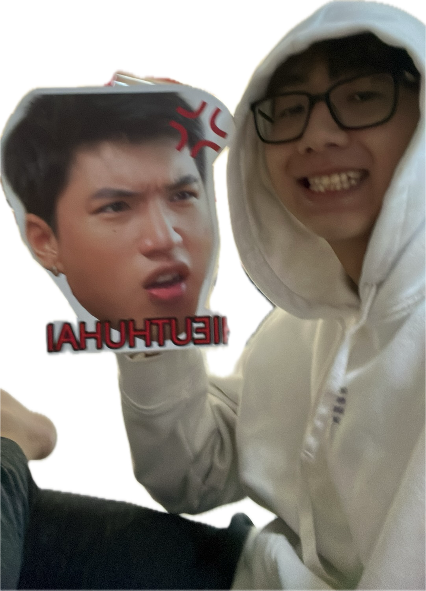

HéLâu Mama, giữa một đêm đông giá rét như thế này mà lại không có Papa kế bên nên chắc hẳn là Mama đang thấy cô dơn lắm nhỉ. Biết được điều đó nên là Papa đã tạo ra một món quà nho nhỏ để khiến Mama vui hơn nè (Rocky cũng tự nguyện tham gia vào á nha)
Mama hãy trả lời những câu hỏi sau đây để đạt được phần thưởng của Papa nha
Câu hỏi số 1: Mama có Iu Papa hong
Câu hỏi số 2: Mama thích điểm nào ở Papa nhất
Câu hỏi số 3: Hiếu thứ hai với Papa ai đẹp trai hơn

Câu hỏi số 4: Trong những bức hình sau đây Papa thích bức hình nào nhất
Câu hỏi số cuối cùng (cũng là câu hỏi quan trọng nhất đó nha Mama):
Rocky năm nay mấy tuổi
Nếu Mama đã chắc chắn với câu trả lời của mình thì hãy nhấn vào nút dưới này nhaaaa (Rocky hi vọng là mama trả lời đúng câu cúi á nha)
Hé Lâu bà chã, hihi vì đang là mùa giáng sinh nên tui đã chọn một tấm bìa thư hợp với không khí giáng sinh nè. Bà chã có thích trò chơi của tui làm cho bà chã hăm, tui làm ra game này chủ yếu là để cho bà chã thấy vui vẻ hơn sau những ngày tồi tệ hoi, nên là thật chất là dù cho bà chã cóa chọn gì đi nữa thì đều sẽ nhận được lá thư này thui, bởi vì với anh bà chã luôn đúng mà. Hehee, xưng anh bất ngờ quá chứ gì, bởi vì đoạn tiếp theo sẽ là những lời tình cảm anh dành cho em mà.
Những ngày qua em đã gặp phải rất nhiều chuyện tồi tệ rồi. Anh biết em là một cô gái mạnh mẽ nên là em luôn cố gắng vượt qua tất cả, nhưng anh vẫn thấy được ở đâu đó trong em vẫn có sự buồn bã và lo lắng cho những thứ sắp tới. Bởi vậy, anh ước gì bây giờ anh có thể ở đó để chăm sóc, dỗ dành em, làm chỗ dựa cho em. Nhưng dù anh không có ở đó đi chăng nữa, thì anh vẫn sẽ luôn mãi là chỗ dựa tinh thần cho em dù cho là bây giờ hay là tương lai sau này đi nữa. Thật trùng hợp vì ngày mai là ngày em phải làm phẩu thuật rồi, chắc là em cũng đang thấy hồi hộp nhỉ? Nhưng không sau đâu, nếu có lúc nào em thấy sợ thì hãy nhớ tới anh sẽ luôn bên em, bảo vệ em dù cho có là gì đi chăng nữa. Anh mong rằng những gì anh làm hôm nay có thể làm em cảm thấy vui vẻ, nói chung là em sẽ luôn mãi là cô bé năng động, xinh đẹp của anh và anh sẽ mãi luôn là luôn là chàng trai ấp áp, dễ thương của em, ta hãy bên nhau mãi em nhé.
Để kết thúc lá thư này thì anh chúc bà chã không những chỉ là một mùa giáng sinh an lành, không những vậy anh mong rằng tất cả những ngày còn lại trong năm nay và năm sau em đều sẽ gặp nhiều may mắn và sống thật hạnh phúc bên cạnh anh nhé. Anh yêu em bé rất nhiều.